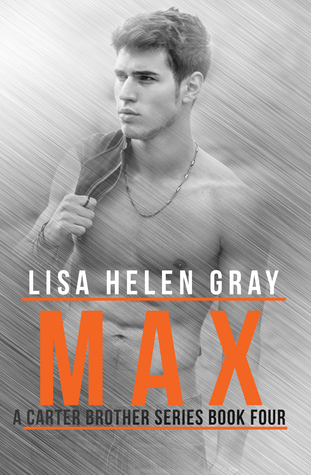

Max
Soy max.....
Tengo mi apariencia, mi encanto, y bueno, una sonrisa que derrite las bragas.
Aunque mi encanto sólo me lleva hasta cierto punto. Aparentemente, ese límite es la ley.
Ni siquiera me importa cuando los tribunales finalmente me castigan por vandalizar la propiedad
de la iglesia; en mi defensa, no sabía que era una iglesia.
Me tienen cumpliendo tres meses de servicio comunitario trabajando en el refugio de Salvación de la
iglesia local.
Piensan que tres meses aquí me cambiarán; que cambiaré mis costumbres delincuentes. Si tan solo
supieran... nada podría domarme.
Me enseñaron a una edad temprana que el amor te destruye. Acepto que nunca amaré y que nunca seré amado.
Pero lo que he aprendido es que el amor es también tu mayor debilidad; por eso esa palabra de cuatro
letras nunca saldrá de mi boca.
Soy Lake Miller...
Durante el último año de mi vida nunca me he quedado en ningún sitio más allá de unas pocas semanas.
Dormía en diferentes refugios para desamparados, en bancos del parque o en cualquier lugar donde pudiera
encontrar un lugar seco para dormir; las únicas pertenencias que tengo las llevo en mi mochila.
Dejé todo lo demás atrás.
Ahora he terminado en Coldenshire; cansada de dormir en las calles, cansada de sufrir y cansada de comer restos de comida.
Así que cuando surgió un encuentro casual para un trabajo en el refugio de la iglesia local, lo acepté.
Sé que mi tiempo aquí se está acabando y que debo correr, especialmente cuando el chico malo del pueblo, que es sexy como el pecado y molesto como el infierno, atraviesa las puertas pensando que es un regalo de Dios para las mujeres.
Piensa que la vida es una broma, que su boca inteligente esconde el dolor detrás de sus ojos, pero está tan fuera de lugar que me sorprende que no esté perdido.
Veo al verdadero él, y no quiero tener nada que ver con él, pero lo hace difícil cuando está siempre en mi cara. Tengo mi propio dolor, mi propia pérdida y pena para sufrir; no necesito la de nadie más.
No necesito nada.
Ni amor, ni compasión, y ciertamente no perdón, después de todo, yo maté a mi hermano.
Soy una asesina.